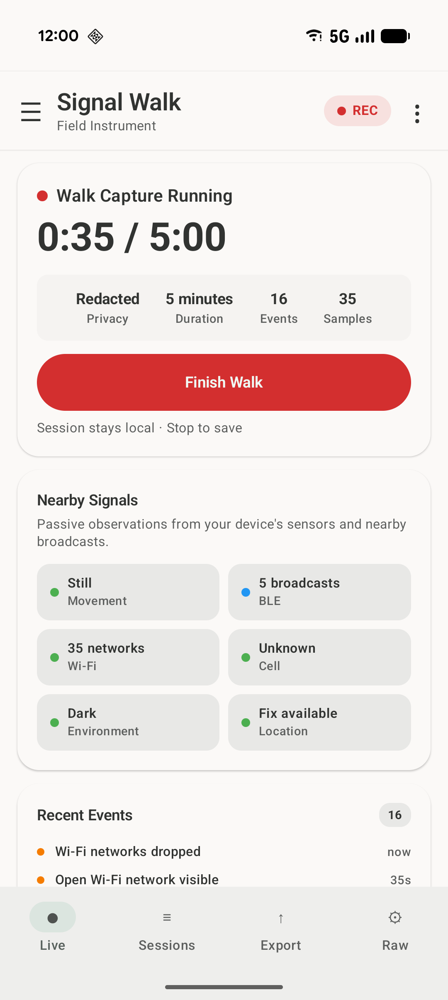

Live capture
A focused dashboard for nearby wireless activity, phone movement, environment sensors, and recent events.
Android field instrument
Signal Walk brings the wireless and sensor readings already available to your Android phone into one clear, timed capture. Watch the environment change, save the session, and export it for deeper analysis.
No account · Local session storage · User-controlled exports

A usable record of the moment
A phone exposes a stream of disconnected measurements. Signal Walk gives them a shared timeline so you can understand what was available, what changed, and when it happened.
Live
Start a Walk Capture and follow nearby signal counts, motion, environmental readings, location quality, and notable events from one focused screen.
Signal Walk does not invent meaning for a reading. It organizes what Android makes available so you can inspect the session in context.
Sessions
Each capture becomes a session with a clear beginning and end, the readings available on your device, and the notable changes recorded along the way.
Simple by design
Exact readings depend on your phone, Android version, granted permissions, and the surrounding environment.
Signal Walk begins a timed session using the supported wireless and sensor readings exposed by Android.
Move through the environment while the Live screen organizes counts, readings, status, and notable changes.
Return to the saved session, compare what changed, or create a privacy-conscious file for another tool.
The field kit
A focused dashboard for nearby wireless activity, phone movement, environment sensors, and recent events.
Keep a durable record of a walk so it can be reviewed instead of disappearing when the live view closes.
Choose Detailed, Redacted, or Summary-only output based on how you plan to use or share the result.
Check key status indicators or launch a short capture without navigating through the full app first.
Open the deeper view when you want the underlying readings and device capability details.
Opt in to map imagery when needed and use supported on-device AI summaries without a Signal Walk account.
Your data, your next step
Export a live snapshot or a saved session, then open the result in a spreadsheet, chart it in a notebook, inspect it with a script, or archive it with your project notes. Signal Walk creates the file; you decide where it goes next.
More telemetry for technical inspection, while the highest-risk identifiers remain excluded by design.
Identifiers and precise coordinates removed for a safer, share-conscious export.
Counts, labels, and session metadata for the smallest and simplest output.
A clear surface with depth underneath
The Live screen keeps the primary task readable. The Raw view exposes the underlying telemetry and device-capability details for users who want to inspect exactly what their phone can provide.
Everything has a place
The navigation drawer keeps the core workflow—Live, Sessions, Export, and Raw—close at hand, with settings and optional features separated from the primary capture experience.
Built for careful curiosity
See how much environmental context a modern phone can observe without turning the experience into a wall of raw numbers.
Compare sensor availability, permission behavior, and device capabilities across different Android hardware.
Create informal, organized field sessions for personal learning and exploration of ambient conditions.
Know what the instrument means
Signal Walk organizes information exposed through supported Android APIs. It does not intercept communications, inspect message content, identify people, connect to nearby devices, or prove why a signal appeared.
It is not a threat detector, surveillance system, or forensic instrument. Use it to learn about environments and devices—not to draw conclusions about individuals.
Local-first by design
Signal Walk does not require an account or a developer-operated session-data service. Saved sessions remain in the app's private local storage unless you choose to export or share them.
Read the Privacy PolicyDevice compatibility
Signal Walk uses supported Android APIs and the sensors present in your device. Exact readings vary by phone model, Android version, permissions, radio state, and surroundings.
Optional on-device AI summaries require compatible Google AICore hardware and software support. Online map imagery remains opt-in and can be avoided entirely.
Contact Signal Walk
Choose the mailbox that matches your question so it reaches the right place without being passed around.
Installation help, Play Store support, feature questions, and general troubleshooting.
support@signalwalk.comQuestions or requests related to the Privacy Policy and personal-data handling.
privacy@signalwalk.comResponsible disclosure of vulnerabilities or other security concerns.
security@signalwalk.comPartnerships, press, project questions, and anything that does not fit elsewhere.
hello@signalwalk.comDeveloper identity, publishing, technical ownership, and platform-provider inquiries.
developer@signalwalk.comA field instrument made to move
Capture a few minutes, review what changed, and discover what your Android phone can tell you about the environment around it.